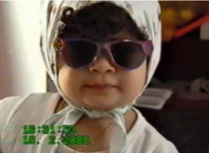
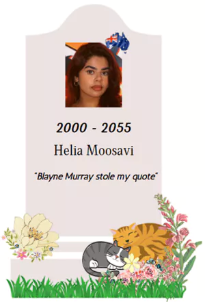
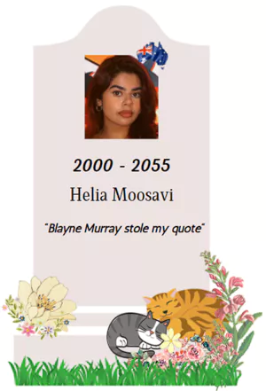

Helia Moosavi
History
Early Life
Helia was born on the 19th of April 2000 in a small city in
Iran. At the age of nine her mother decided to continue
studying abroad, in 2009 Helia and her Mother moved to
Malaysia and lived there for 4 years. After returning to Iran
Helia’s Mother decided to travel to Australia to create a
better future for her daughter. In 2014 Helia and her family
moved to Australia. Fitting in was one of Helia’s biggest
challenges in the beginning of her life in Australia, She was
quite different from the other kids and at the time english
wasn't her strongest skills, she felt alone and left out
most of the time, but with time she found some amazing friends
and finally felt at home in Australia. She had made some great
memories that she never forgot. Her passion for IT had stemmed
from her Mother, she has always been around new technology and
watching her mother code made her really excited. After
graduating high school Helia took on a full time role in a
recruitment company focusing solely on IT roles, after working
in the IT recruitment industry Helia finally made the decision
to take it upon herself and start a new journey in her life by
studying her Bachelors in IT.

Website
Career Plan
Years 2022 - 2028
Whilst studying for her bachelor’s Helia also took on learning a new language, Arabic, she already was fluent in Persian and English but learning a new language was a very beneficial skill for her. She continued working as a full-time recruiter and studying at the same time. She graduated from her Bachelor of Information Technology in March 2025, after graduating she applied for her master’s in cyber security at the UNSW Canberra Campus. She shortly applied for the Technologist Graduate program at the ASIO. She made the decision to move states from Sydney to Canberra as her university and desired job was going to be based there.
Moving to Canberra was one of the best decisions Helia had made career wise, getting into the Technologist Graduate program really set out a clear career path for Helia at the time. After completing her 12 months training program, Helia got hired at the ASIO to work as a Junior Cyber Security analyst working in a small dynamic team, this opportunity helped Helia gain the experience needed for her career whilst also studying for her master’s in cyber security. Helia worked as a Junior Cyber Security Analyst and after 3 years once her master’s degree was completed, she got promoted to a Senior Cyber Threat Hunter role within the ASIO. Whilst working as A Senior Cyber Threat Hunter Helia also invested her time to learn more skills such as Martial Arts (Brazilian jiu jitsu) and Learnt Mandarin to advance the chances of her application for the Intelligent Officer Opportunity.
Years 2029 - 2033
After working as a Senior Cyber Threat Hunter for 5 years, Helia decided it was the right time to apply for the Intelligent Officer position given she has had many years of experience and a high level set of skills.
Years 2034 - 2036
Helia’s application for the Intelligent Officer opportunity got accepted and had started 3 months of intense training to prepare her for the challenges of this role. Her training included physical and mental training.
Honourable mentions of her 2 years of working in Australia stopping a criminal from buying weapons planned for a terrorist attack, she did many hours of surveillance and tracked down all the members of a Terrorist group.
Years 2037 – 2046
After 72 years of working in Australia, Helia was sent overseas to middle east to undergo undercover and give intel from the inside of one the biggest terrorist groups in the world. As her work in Australia needed more intel from the inside of said Terrorist group. The reason she was sent to the Middle East was because of her cultural background and her fluency in Arabic which made her the perfect candidate for this case.
Once arrived in the middle east Helia had to move tacitly to not raise suspicion, since she was a woman, her being able to get into the terrorist group would be more difficult as it mainly male dominated. Her 10 years of being in the middle east were incredibly impactful, she was able to provide important intel consistently which have led to stop many attacks within the middle east and Australia, Helia also helped many women and children that were forcefully involved with the terrorist group to successfully escape and seek shelter in different countries, overall, she had stopped 15 attacks and helped escaped over 200 women and kids.
Years 2047 – 2055
After a successful 10 years in the middle east, Helia returned to Australia to her family, and continued on her work securing Australia in Canberra. She had a true passion for what she did , and made a true impact in the industry.

Whilst studying for her bachelor’s Helia also took on learning a new language, Arabic, she already was fluent in Persian and English but learning a new language was a very beneficial skill for her. She continued working as a full-time recruiter and studying at the same time. She graduated from her Bachelor of Information Technology in March 2025, after graduating she applied for her master’s in cyber security at the UNSW Canberra Campus. She shortly applied for the Technologist Graduate program at the ASIO. She made the decision to move states from Sydney to Canberra as her university and desired job was going to be based there.
Moving to Canberra was one of the best decisions Helia had made career wise, getting into the Technologist Graduate program really set out a clear career path for Helia at the time. After completing her 12 months training program, Helia got hired at the ASIO to work as a Junior Cyber Security analyst working in a small dynamic team, this opportunity helped Helia gain the experience needed for her career whilst also studying for her master’s in cyber security. Helia worked as a Junior Cyber Security Analyst and after 3 years once her master’s degree was completed, she got promoted to a Senior Cyber Threat Hunter role within the ASIO. Whilst working as A Senior Cyber Threat Hunter Helia also invested her time to learn more skills such as Martial Arts (Brazilian jiu jitsu) and Learnt Mandarin to advance the chances of her application for the Intelligent Officer Opportunity.
Years 2029 - 2033
After working as a Senior Cyber Threat Hunter for 5 years, Helia decided it was the right time to apply for the Intelligent Officer position given she has had many years of experience and a high level set of skills.
Years 2034 - 2036
Helia’s application for the Intelligent Officer opportunity got accepted and had started 3 months of intense training to prepare her for the challenges of this role. Her training included physical and mental training.
Honourable mentions of her 2 years of working in Australia stopping a criminal from buying weapons planned for a terrorist attack, she did many hours of surveillance and tracked down all the members of a Terrorist group.
Years 2037 – 2046
After 72 years of working in Australia, Helia was sent overseas to middle east to undergo undercover and give intel from the inside of one the biggest terrorist groups in the world. As her work in Australia needed more intel from the inside of said Terrorist group. The reason she was sent to the Middle East was because of her cultural background and her fluency in Arabic which made her the perfect candidate for this case.
Once arrived in the middle east Helia had to move tacitly to not raise suspicion, since she was a woman, her being able to get into the terrorist group would be more difficult as it mainly male dominated. Her 10 years of being in the middle east were incredibly impactful, she was able to provide important intel consistently which have led to stop many attacks within the middle east and Australia, Helia also helped many women and children that were forcefully involved with the terrorist group to successfully escape and seek shelter in different countries, overall, she had stopped 15 attacks and helped escaped over 200 women and kids.
Years 2047 – 2055
After a successful 10 years in the middle east, Helia returned to Australia to her family, and continued on her work securing Australia in Canberra. She had a true passion for what she did , and made a true impact in the industry.
Death
Helia was assassinated at the age of 55 whilst on surveillance
duty by one the main leaders of a terrorist group.
Helia was loved by many and made so many great relationships over the years of working at the ASIO, her amazing work was always recognised and praised. She set a great example for young women who had the same dream as her, her main goal in life was to always protect people and adopt as many cats as possible.

Helia was loved by many and made so many great relationships over the years of working at the ASIO, her amazing work was always recognised and praised. She set a great example for young women who had the same dream as her, her main goal in life was to always protect people and adopt as many cats as possible.

Reflection
In the beginning of A3 I was excited, but with 3 members
dropping out of the course it did cause me to stress out a
little bit, but thinking about how well Michelle, Blayne and I
worked together on A2 all my worries went away. We worked
incredibly well together and everything was done and delivered
either on time or earlier, we did not have any specific roles
within this assignment we all helped each other out with
everything. One surprising thing that happened during this
assignment was three members dropping out of the course, but
with that happening the way we worked became at a much quicker
pace and the formality had completely dropped as we have made
a genuine connection over the period of this course and have
become good friends. I can’t really think of any improvements
as our previous concerns were solved once the other members
dropped out of the course. What went really well is the
connection I have made with Michelle and Blayne as not only
classmates but as really close friends. Working on an
assignment with people who you actually enjoy spending time
with really impacts the outcome. So far this has been the best
group I have ever been with and I wouldn't change
anything about us. I’m really thankful to both Michelle and
Blayne for being so amazing and supportive over the period of
this course.